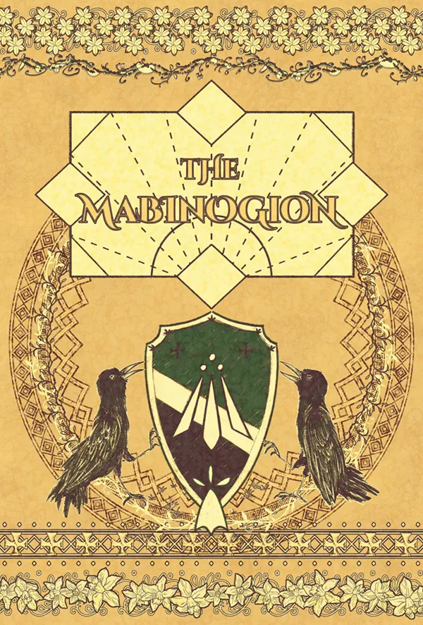

마비노기온
브리튼 켈트 전설과 아서 왕의 기원
Mabinogion
- 발행일
- 2024년 2월 29일
- 엮은이
- 샬럿 E. 게스트
- 옮긴이
- 류은결
- ISBN
- 979-11-989037-0-9 (05840)
- 정가
- 28,700원
- 페이지46판(B6)을 기준으로 측정하였습니다. 독서 환경, 개정 등에 따라 다소 변동할 수 있습니다.
- 998
소개
유월공방의 시작, 2년 반의 집념.
수정과 수정을 거듭한 «마비노기온» 국내 유일 완역서.
(앞으로도 조금씩 수정될 수 있어요! ^^)
소문만 무성한 마비노기,
베일 너머에 숨은 진짜 아서 왕,
역사의 뒤안길에 파묻힌 켈트 전설.
모든 이야기를 낱낱이 확인할 유일한 통로입니다.
목차
- I.샘물의 백작부인
- II.에브로그의 아들 페레디르
- III.게라인트와 에니드
- IV.킬후흐와 올웬
- V.로나브위의 꿈
- VI.더베드의 군주 프윌
- VII.리르의 딸 브란웬
- VIII.리르의 아들 마나위단
- IX.마소누이의 아들 마스
- X.막센 울레디그의 꿈
- XI.리드와 레벨리스의 모험
- XII.탈리에신의 일대기
- XIII.저자 주해
미리보기 주석은 본서에서 만나보실 수 있습니다.
킬후흐와 그의 일행은 광활한 들판에 닿을 때까지 여행하였다. 저편에 세상에서 가장 아름답고 거대한 성채가 보였다. 그들은 그날 저녁까지 성을 향하여 똑바로 걸었는데, 바로 앞까지 다다랐겠거니 싶어 앞을 올려다보았으나 아침보다 조금도 더 가까워지지 못하였다. 둘째 날과 셋째 날에도 그들은 쉬지 않고 걸었고, 셋째 날이 다 저물 때가 되어서야 간신히 성벽 앞에 다다를 수 있었다.
성채 앞에서 그들은 끝도 없이 이어진 엄청난 수효의 양 떼를 보았다. 언덕 꼭대기에서 양치기 한 명이 그 양 떼를 치고 있었다. 가죽 외투를 두른 양치기의 곁에 아홉 겨울을 난 말보다도 덩치가 크고 털이 덥수룩한 사냥개가 있었다. 그 개는 수많은 양 떼 가운데서 어린 양 단 한 마리조차 잃은 적이 없었으며, 상처와 해악을 입힐 기회를 놓친 적이 단 한 번도 없었다. 또 개가 내뿜는 더운 입김은 들판의 모든 나무와 덤불을 뿌리까지 모조리 태워 버렸다. 양치기를 본 카이가 구리르에게 말하였다.
“모든 언어에 능한 구리르여, 저 사람에게 가서 인사하시구려.”
“카이, 나는 그대보다 한 걸음이라도 더 멀리 나아가겠다고 약속한 일이 없소이다.”
“그러면 우리 모두 함께 갑시다.”
테이르그와이드의 아들 메누가 말하였다.
“내가 저 개에게 요술을 걸어 아무도 해치지 못하게 할 터이니 나아가기를 두려워 마시오.”
그들은 언덕 꼭대기에 올라 양치기에게 말을 걸었다.
“양치기여, 그대 참 잘생겼구려!”
“그대들이 나보다 더 잘생기지 않기를 바라오.”
“그대가 이곳을 다스리는 자요?”
“아니오.”
“그러면 그대가 지키는 양 떼는 누구의 것이며 저 성채는 누구의 것이오?”
“멍청이가 하늘로 날아오르는군! 이 성이 어스바다덴 벤카우르의 것임을 온 세상이 다 알거늘.”
“그대는 누구요?”
“나는 머누예디그Mynwyedig의 아들이자 어스바다덴 벤카우르의 형제인 키스테닌이오. 나는 그에게 박해를 당하여 내쫓겼소. 그러는 그대들은 누구요?”
“우리는 어스바다덴 벤카우르의 딸 올웬을 찾으러 온 아서의 전령이오.”
“아아, 주님의 자비가 그대들에게 내리기를! 온 세상을 위하여 말하노니 그것만은 제발 그만두시오. 올웬을 찾으러 여기까지 온 자들 가운데 살아 돌아간 자가 아무도 없소.”
그 말을 하고서 양치기가 자리에서 일어나자 킬후흐가 그에게 황금 반지를 주었다. 키스테닌은 반지를 끼려 하였으나 너무 작은 탓에 장갑의 손가락에 끼워 두었다. 집에 돌아간 키스테닌은 아내에게 그 장갑을 주었다. 아내가 장갑에서 반지를 빼내며 물었다.
“여보, 그대가 누구에게서 선물을 받다니 예삿일이 아니구려. 이 반지는 어디서 났소?”
“고기를 잡으러 바다에 갔다가 파도에 떠밀려 온 시신을 보았는데, 그보다 더 아름다운 사람을 본 적이 없었소. 그의 손가락에서 이 반지를 가져왔소.”
“아아, 제 품에서 죽은 자가 패물을 두르기를 바다가 허락한다는 말이오? 그렇다면 내게 그 죽은 자를 보여주오.”
“여보, 이 반지가 누구의 것이었는지 오늘 저녁에 여기서 보게 될 것이오.”
“그가 누구요?”
“켈러돈 울레디그의 아들 킬리드와 안라우드 울레디그의 딸 골레이디드의 사이에서 난 아들 킬후흐요. 그는 올웬을 아내로 구하러 왔소.”
양치기의 아내는 킬후흐의 어머니인 골레이디드의 자매였다. 그의 감정은 조카가 자신에게 온다는 기쁨과 이곳을 살아서 떠난 사람이 없다는 슬픔으로 갈라졌다.
한편 킬후흐 일행은 양치기 키스테닌의 집으로 향하였다. 그들의 발소리가 들리자 키스테닌의 아내가 기뻐서 뛰쳐나와 그들을 맞이하였다. 부인은 킬후흐 일행의 얼굴을 보자마자 두 팔을 벌려 목을 감싸안으려 하였다. 이때 카이가 곁에 쌓인 장작 더미에서 재빨리 통나무를 들어 부인의 두 손 사이에 끼웠다. 부인이 통나무를 끌어안자 팔심이 어찌나 억세었는지 굵은 통나무가 버드나무 가지처럼 우그러졌다.
“부인, 그대가 나를 이렇게 힘껏 끌어안았다면 누구도 다시는 나를 사랑하지 못하게 되었을 게요. 이것은 지나친 사랑이었소.”
곧 그들은 집에 들어가 식사를 한 뒤 마당으로 나와 도란도란 이야기를 나누었다. 이때 부인이 굴뚝 구석에 둔 돌 상자를 열자 거기서 노란 곱슬머리의 젊은 사내가 튀어나왔다. 카이가 이를 보고 깜짝 놀랐다.
“이 청년을 이렇게 숨겨 두다니 애석하구나! 나는 그가 악행 탓에 벌을 받는 것이 아님을 알겠도다.
부인이 그 사연을 말하였다.
“이 아이는 내게 마지막으로 남은 희망이오. 어스바다덴 벤카우르가 나의 아들 스물셋을 죽였으니 이 아이라고 살려 두리라는 믿음이 가지는 않소이다.”
“그렇다면 이 청년을 나와 동행하게 하시오. 내가 죽지 않는 한 이 아이도 죽임을 당하지 않을 것이오.”
그리하여 그들은 식사를 하였다. 부인이 물었다.
“무슨 일로 여기까지 오셨소이까?”
“이 소년을 위하여 올웬이라는 소녀를 찾으러 왔소.”
“나 간곡히 말하오. 아직 저 성에서 그대들을 본 자가 없으니 왔던 길로 돌아가시구려.”
“우리 단호히 증언하노니 그 소녀를 보기 전에는 돌아가지 않겠소.”
카이가 물었다.
“그 올웬이라는 소녀가 이곳에 온 적이 있소이까?”
“그 아이는 토요일마다 여기 와서 머리를 감고 대야에 반지를 놓아 두고 가는데, 반지를 되찾으려고 직접 온 적도 없고 시녀를 보낸 적도 없소.”
“만약 우리가 그 소녀를 부르면 여기에 올 것 같소이까?”
“내가 나의 영혼을 스스로 부수지도 않고 나의 믿음을 깨지도 아니할 것임을 주님께서 아시나니, 그대들이 그 아이를 해치지 않겠노라고 진정 맹세하지 않거든 나는 올웬을 불러내지 않겠소.”
“맹세하오.”
그리하여 킬후흐 일행이 올웬을 해치지 않겠다고 맹세하고 전령을 보내니 머지않아 소녀가 찾아왔다. 올웬은 불꽃과 같은 진홍빛 비단 의복을 입었으며, 목에는 진귀한 취옥과 진주로 장식된 붉은 황금 목걸이를 둘렀다. 머리카락은 금작화보다도 노랗게 빛났고, 살갗은 파도에 이는 거품보다도 희었으며, 손과 손가락은 들판의 샘물에 이는 물보라 속 숲바람꽃보다도 고왔다. 보라매의 날카로운 눈빛은 소녀의 눈길보다 빛나지 못하였다. 소녀의 눈과 같은 가슴은 백조의 가슴보다도 더 새하얗고, 뺨은 가장 붉은 포도주보다도 더 붉었다. 소녀를 바라보는 사람은 누구든지 그를 사랑하는 마음에 가슴이 벅차올랐으며, 그가 발을 디딘 자리마다 새하얀 토끼풀꽃 네 송이가 자라났으니 이것이 바로 소녀가 올웬, 곧 “새하얀gwen 발자국ôl”이라 불린 이유였다.
올웬이 집에 들어서서 킬후흐가 앉은 장의자 곁의 상석에 앉자 킬후흐가 곧바로 그를 알아보았다. 킬후흐가 올웬에게 고백하였다.
“아아 소녀여! 그대는 내가 사랑하는 사람이니, 그대가 우리를 욕되이 여기지 않는다면 나와 함께 떠납시다. 나 고백하건대 참으로 오래도록 그대를 사모하였습니다.”
“나는 아버지의 허락 없이는 떠나지 않겠노라고 그분께 맹세하였으며, 더군다나 내가 결혼하는 그날 아버지의 생명이 끝날 것이기에 그러할 수 없습니다. 그러나 그대가 받아들인다면 나는 그대에게 조언을 하고자 하니, 가서 내 아버지께 나와의 결혼을 구하십시오. 그대가 아버지의 과업을 모두 들어준다면 나를 얻을 것이나, 거절한다면 나를 얻지 못함은 물론 목숨이라도 건지거든 차라리 다행스러울 것입니다.”
“그 모든 일을 행하기로 맹세합니다.”
올웬은 규방으로 돌아갔고, 킬후흐의 일행은 모두 일어나 올웬을 따라 성으로 갔다. 그들은 아홉 성문을 지키는 아홉 문지기를 조용히 베었으며, 아홉 번견도 짖을 틈도 주지 않고 죽인 뒤 회당으로 들어섰다. 그들이 어스바다덴을 발견하자마자 말하였다.
“어스바다덴 벤카우르여! 하늘과 땅의 모든 복락이 그대에게 있기를.”
“너희는 무슨 일로 찾아왔느냐?”
“켈러돈 울레디그의 손자이자 킬리드의 아들 킬후흐를 위하여 그대의 딸 올웬을 구하러 왔소.”
거인 어스바다덴은 눈꺼풀이 너무 무거워 스스로 눈을 뜰 수 없었다. 그가 시종을 불렀다.
“내 시종과 문지기는 어디에 있느냐? 내 두 눈꺼풀 아래에 장대를 받치고 들어올려 내 사위 될 자의 행색을 보게 하라.”
어스바다덴의 시종이 와서 그의 눈꺼풀을 들어올렸다. 거인이 킬후흐를 훑어보고 말하였다.
“내일 다시 찾아오거든 답을 얻을 게다.”
일행은 바깥으로 돌아가고자 일어났다. 그때 어스바다덴 벤카우르가 곁에 놓여 있던 세 자루 독 투창 가운데 하나를 집어 그들에게 던졌다. 베드위르가 그것을 붙잡아서 도로 집어던졌고, 투창은 어스바다덴 벤카우르의 무릎을 격렬하게 꿰뚫었다.
“이 사악하고 막돼먹은 사위 놈아! 나는 네 결례로 인하여 영원토록 제대로 걷지 못할 것이며 이 상흔을 치유할 도리도 없으리라. 독 묻은 쇠붙이가 마치 말벌에게 쏘인 것과 같이 고통스럽도다. 이 쇠를 두드린 대장장이와 모루에게 저주 있으라! 아아, 너무나도 날카롭구나!”
그들은 그날 밤 양치기 키스테닌의 집에 돌아가 잤다. 이튿날 동이 트자 그들은 재빨리 채비를 하고 곧바로 성의 회당으로 돌아가 말하였다.
“어스바다덴 벤카우르여, 그대의 딸을 우리에게 내어준다면 우리는 넉넉한 지참금과 보화를 줄 것이며 그대와 그대 딸의 자매에게도 똑같이 지불하겠소. 그러나 그렇게 하지 않거든 그대는 죽을 것이오.”
“내 딸의 네 증조모와 네 증조부가 아직 살아 있으니 먼저 그들의 조언을 듣겠다.”
“그렇게 하시오. 우리는 고기를 먹으러 가겠소.”
일행이 바깥으로 나가려고 일어나자 어스바다덴 벤카우르가 두 번째 투창을 집어서 그들에게 던졌다. 테이르그와이드의 아들 메누가 그것을 붙잡아서 도로 집어던졌고, 창은 거인의 가슴을 꿰뚫어 등 아래로 튀어나왔다.
“이 사악하고 막돼먹은 사위 놈아! 단단한 쇠붙이가 말거머리에 물린 것과 같이 고통스럽구나. 이 쇠를 달군 화로와 대장장이에게 저주 있으라! 이제 나는 언덕을 오를 때마다 숨이 차오르고 가슴이 아파서 식음을 꺼릴 것이다.”
그리고 일행은 고기를 먹으러 갔다. 사흗날에 그들이 성으로 돌아오자 어스바다덴 벤카우르가 외쳤다.
“죽고 싶지 않거든 다시는 내게 무얼 던지지 말라. 내 시종은 어디에 있느냐? 내 눈동자를 가린 눈꺼풀을 들어올려 사위의 행색을 보게 하라.”
시종들이 일어나 거인의 눈꺼풀을 들어올리자 그가 세 번째 투창을 집어던졌다. 킬후흐가 투창을 붙잡아 힘차게 던졌고, 투창은 거인의 눈을 꿰뚫어 뒤통수에 박혔다.
“이 사악하고 막돼먹은 사위 놈아! 나의 시야는 살아 있는 동안 나날이 어두워질 것이며, 바람을 맞을 때마다 눈물이 나고, 머리가 불타오르고, 초승달이 뜰 때마다 현기증에 시달리리라. 이 쇠를 달군 불에도 저주 있으라! 독 묻은 쇠붙이가 낸 상처가 미친 개의 이빨에 물린 것과 같구나.”
그리고 일행은 고기를 먹으러 갔다. 나흗날 그들이 다시 성에 와서 엄포를 놓았다.
“더 많은 고통과 죽음을 원치 않거든 이제 우리에게 무엇을 던지지 마시오.”
킬후흐가 덧붙였다.
“그대의 딸을 내게 주십시오. 그러지 않거든 그대는 죽을 것입니다.”
“내 딸을 찾는 자가 어디에 있느냐? 내가 너를 똑바로 볼 수 있게끔 이리 오너라.”
어스바다덴과 킬후흐는 의자를 마주보게 놓았다. 어스바다덴이 물었다.
“내 딸을 찾는 이가 너냐?”
“예, 그렇습니다.”
“너는 내게 정의롭지 않은 일을 행하지 않겠다고 맹세하여라. 내가 지금부터 말할 모든 것을 네가 얻거든 내 딸 또한 얻을 것이다.”
“기꺼이 그대에게 약속하겠습니다. 그대가 원하는 것이 무엇입니까?”
“말해 주마. 저편에 자란 무성한 덤불이 보이느냐?”
“예, 보입니다.”
“그 덤불을 모조리 뿌리 뽑고 불살라 땅에 거름으로 주고, 하루 안에 쟁기질을 다 하여 씨를 뿌리고, 하루 안에 낱알을 다 익혀라. 그리하여 그 이삭으로 너와 내 딸의 결혼식에 어울리는 음식과 술을 만들고자 하니, 이 모든 일을 하루 안에 다 끝내라.”
“그대는 쉽지 않다고 생각하겠지만, 나는 이 일을 쉽게 해낼 수 있을 것입니다.”
“쉬워 보일지 모르겠지만 그리 쉽지는 않을 게다. 돈의 아들 아메이손Amaethon이 아니고서는 저 황폐하고 넓은 땅을 갈 수 있는 쟁기꾼이 없으니, 그는 스스로 너와 함께 가지 않을 것이며 너는 그에게 강요할 수 없을 것이다.”
“그대는 쉽지 않다고 생각하겠지만, 나는 이 일을 쉽게 해낼 수 있을 것입니다.”
“네가 해낸다 하더라도 얻지 못할 것이 아직 남아 있다. 돈의 아들 고바논Gofannon이 쇠를 두드려 쟁기날을 세우러 언덕에 와야 하는데, 그는 정당한 임금의 명령이 아니라면 스스로 일을 하지 않을 것이며 너는 그에게 강요할 수 없을 것이다.”
“그대는 쉽지 않다고 생각하겠지만, 나는 이 일을 쉽게 해낼 수 있을 것입니다.”
“네가 해낸다 하더라도 얻지 못할 것이 아직 남아 있다. 굴룰리드 위나이Gwlwlydd Winau의 두 황소가 멍에를 메고 저 너머의 거친 땅을 힘차게 갈아야 할 것인데, 그는 기꺼이 소를 주지 않을 것이며 너는 그에게 강요할 수 없을 것이다.”
“나는 쉽게 해낼 수 있을 것입니다.”
“네가 해낸다 하더라도 얻지 못할 것이 아직 남아 있다. 두 황소 멜린 그완윈Melyn Gwanwyn과 이흐 브리흐Ych Brych도 함께 멍에를 메어야 한다.”
“나는 쉽게 해낼 수 있을 것입니다.”
“네가 해낸다 하더라도 얻지 못할 것이 아직 남아 있다. 본래 사람이었으나 죄를 지어 신께서 뿔 달린 황소로 모습을 바꾸신 너니아우Nyniaw와 페이비아우Peibiaw가 하나는 머니드 바노그Mynydd Bannog의 저편에서, 다른 하나는 이편에서 한 멍에를 메어 한 쟁기를 함께 끌어야 한다.”
“나는 쉽게 해낼 수 있을 것입니다.”
“네가 해낸다 하더라도 얻지 못할 것이 아직 남아 있다. 저쪽에 놀고 있는 붉은 밭이 보이느냐?”
“보입니다.”
“내가 처음 딸아이의 어머니를 만났을 때 아홉 말의 아마 씨앗을 그곳에 뿌렸지. 그러나 아직 흰 아마도 검은 아마도 한 포기도 자라나지 않았으며, 성 안에 그만큼의 씨앗이 아직도 남아 있다. 그 아마 씨앗을 저쪽 새 땅에 뿌려 키워 내고, 흰 면사포를 지어 네 결혼식 날에 딸아이의 머리에 씌워 주기를 나는 요구한다.”
“나는 쉽게 해낼 것입니다.”
“네가 해낸다 하더라도 얻지 못할 것이 아직 남아 있다. 가장 정결한 벌 떼가 모은 꿀보다 아홉 배 달콤하며 찌꺼기도 얼룩도 없는 좋은 꿀로 술을 빚어 잔치에 내기를 나는 요구한다.”
“나는 쉽게 해낼 것입니다.”
“르위리온Llwyrion의 아들 르위르Llwyr가 소유한 이 세상에서 가장 값진 그릇이 필요하다. 그와 같이 귀중한 술을 담을 수 있는 그릇은 이 세상에 달리 없다. 그러나 그는 스스로 그릇을 내어 주지 않을 것이며 너는 강요할 수 없을 것이다.”
“나는 쉽게 해낼 것입니다.”
“네가 해낸다 하더라도 얻지 못할 것이 아직 남아 있다. 그위드노 가란히르Gwyddno Garanhir의 바구니에는 신묘한 힘이 있어서, 스물일곱 장정이 한데에 모여도 그들이 배불리 먹을 고기가 그 안에서 나온다. 딸아이가 네 신부가 되는 날 밤에 나는 그 고기를 먹을 것이다. 그러나 그는 스스로 바구니를 내어 주지 않을 것이며 너는 강요할 수 없을 것이다.”
“나는 쉽게 해낼 것입니다.”
“네가 해낸다 하더라도 얻지 못할 것이 아직 남아 있다. 그날 밤 우리가 마실 술을 담을 고도딘Gododdin 사람 굴가우드Gwlgawd의 뿔잔이 필요한데, 그는 스스로 내어 주지 않을 것이며 너는 강요할 수 없을 것이다.”
“나는 쉽게 해낼 것입니다.”
“네가 해낸다 하더라도 얻지 못할 것이 아직 남아 있다. 그날 밤 우리의 귀를 즐겁게 할 테이르티Teirtu의 수금은 연주하기를 원하면 스스로 연주하고, 멈추기를 원하면 스스로 멈춘다. 그리고 그는 수금을 스스로 내어 주지 않을 것이며 너는 강요할 수 없을 것이다.”
“나는 쉽게 해낼 것입니다.”
“네가 해낸다 하더라도 얻지 못할 것이 아직 남아 있다. 죽은 자를 깨우고 산 자를 잠재우는 리아논의 새를 데려와 그날 밤 나의 귀를 즐겁게 하여라.”
“나는 쉽게 해낼 것입니다.”
“네가 해낸다 하더라도 얻지 못할 것이 아직 남아 있다. 네 결혼 잔치에 대접할 고기를 끓이려면 디우르나흐 위델Diwrnach Wyddel의 가마솥이 필요하다. 그는 아이드의 아들인 아일랜드 왕 오드가르Odgar의 청지기이다.”
“나는 쉽게 해낼 것입니다.”
“네가 해낸다 하더라도 얻지 못할 것이 아직 남아 있다. 나는 머리를 감고 수염을 깎아야 하는데, 그러려면 어스기스루인 펜 바이드Ysgithrwyn Pen Baedd의 엄니가 필요하다. 그러나 그놈의 머리에서 엄니를 산 채로 뽑아내지 않는다면 아무 짝에도 쓸모가 없게 될 것이다.”
“나는 쉽게 해낼 것입니다.”
“네가 해낸다 하더라도 얻지 못할 것이 아직 남아 있다. 아일랜드의 왕, 아이드의 아들 오드가르가 아니면 이 세상의 그 누구도 그놈의 머리에서 엄니를 뽑아낼 수 없을 것이다.”
“나는 쉽게 해낼 것입니다.”
“네가 해낸다 하더라도 얻지 못할 것이 아직 남아 있다. 나는 프러딘Prydyn의 카우 이외에는 그 누구에게도 엄니를 맡기지 않을 것이다. 북방의 예순 후국을 다스리는 그는 자신의 의지로 왕국에서 나오지 않을 것이며 네가 억지로 데리고 나올 수도 없을 것이다.”
“나는 쉽게 해낼 것입니다.”
“네가 해낸다 하더라도 얻지 못할 것이 아직 남아 있다. 거칠게 말린 나의 수염을 깎기 전에 부드럽게 풀어 주어야 하는데, 페난트 고비드Pennant Gofid의 저승으로 통하는 경계에 사는 마녀 오르웬Orwen의 딸 오르디Orddu의 피가 없다면 결코 펼쳐지지 않을 것이다.”
“나는 쉽게 해낼 것입니다.”
“네가 해낸다 하더라도 얻지 못할 것이 아직 남아 있다. 그 피가 식거든 아무 쓸모가 없게 될 것이며, 그위돌윈 고르의 술통이 있어야만 그 피를 따뜻하게 가져올 수 있을 것이다. 동방에서 그 술통에 더운 술을 담으면 서방에 다다를 때까지 식지 않는다. 그러나 그는 술통을 스스로 내어 주지 않을 것이며 너는 강요할 수 없을 것이다.”
“나는 쉽게 해낼 것입니다.”
“네가 해낸다 하더라도 얻지 못할 것이 아직 남아 있다. 러논 린 바르보그Rhynnon Ryn Barfog의 술통에 술을 담으면 영원토록 상하지 않게 되는데, 그 술통이 없으면 잔치에 참석한 모든 하객에게 신선한 우유를 대접할 수 없을 것이다. 그러나 그는 술통을 스스로 내어 주지 않을 것이며 너는 강요할 수 없을 것이다.”
“나는 쉽게 해낼 것입니다.”
“네가 해낸다 하더라도 얻지 못할 것이 아직 남아 있다. 타레드 울레디그Taredd Wledig의 아들 투르흐 트루이스Twrch Trwyth의 두 귀 사이에 걸린 빗과 가위가 아니면 온 세상에 나의 무성하고 거친 수염을 정리할 도구가 없을 것이다. 물론 그는 빗과 가위를 스스로 내어 주지 않을 것이며 너는 강요할 수 없을 것이다.”
“나는 쉽게 해낼 것입니다.”
“네가 해낸다 하더라도 얻지 못할 것이 아직 남아 있다. 에리의 아들 그라이드가 기르는 사냥개 드리드윈Drudwyn이 없으면 멧돼지 트루이스를 사냥할 수 없다.”
“나는 쉽게 해낼 것입니다.”
“네가 해낸다 하더라도 얻지 못할 것이 아직 남아 있다. 온 세상에 그 개를 붙들 수 있는 끈은 코르스 칸트 에윈의 끈뿐이다.”
“나는 쉽게 해낼 것입니다.”
“네가 해낸다 하더라도 얻지 못할 것이 아직 남아 있다. 온 세상에 그 끈을 개의 목에 맬 수 있는 목걸이는 칸하스티르 칸 라우의 목걸이뿐이다.”
“나는 쉽게 해낼 것입니다.”
“네가 해낸다 하더라도 얻지 못할 것이 아직 남아 있다. 끈과 목걸이를 이으려면 킬리드 칸하스티르의 사슬이 필요하다.”
“나는 쉽게 해낼 것입니다.”
“네가 해낸다 하더라도 얻지 못할 것이 아직 남아 있다. 온 세상에 그 개를 부리며 사냥할 수 있는 사냥꾼은 모드론Modron의 아들 마본Mabon뿐이다. 그의 어머니는 그가 태어난 지 사흗날에 아들을 빼앗겼으며, 그가 지금 어디에 있는지, 혹은 살았는지 죽었는지조차 그 누구도 알지 못한다.”
“나는 쉽게 해낼 것입니다.”
“네가 해낸다 하더라도 얻지 못할 것이 아직 남아 있다. 그웨두Gweddw가 소유한 파도처럼 빠른 종마 그윈 밍둔Gwyn Myngddwn을 모드론의 아들 마본이 멧돼지를 사냥하러 갈 때 타야 할 것이다. 그는 말을 스스로 내어 주지 않을 것이며 너는 강요할 수 없을 것이다.”
“나는 쉽게 해낼 것입니다.”
“네가 해낸다 하더라도 얻지 못할 것이 아직 남아 있다. 네가 마본의 사촌이자 아이르Aer의 아들인 에이도일을 찾지 못하거든 마본이 어디에 있는지 결코 알 수 없을 것이며, 너는 그를 얻지 못할 것이다.”
“나는 쉽게 해낼 것입니다.”
“네가 해낸다 하더라도 얻지 못할 것이 아직 남아 있다. 아일랜드에서 제일가는 사냥꾼 가르셀리드 위델이 없으면 결코 멧돼지 트루이스를 사냥할 수 없을 것이다.”
“나는 쉽게 해낼 것입니다.”
“네가 해낸다 하더라도 얻지 못할 것이 아직 남아 있다. 내가 말한 사냥개와 준마를 묶어 두려면 딜리스 바르보그Dillus Farfog가 살아 있을 때 나무 집게로 뽑아낸 수염이 필요하다. 그러나 그는 살아 있는 동안에는 그러한 일을 허락하지 않을 것이며, 그가 죽으면 수염이 바스러져 아무 쓸모가 없게 될 것이다.”
“나는 쉽게 해낼 것입니다.”
“네가 해낸다 하더라도 얻지 못할 것이 아직 남아 있다. 헤툰 글라버리오그Hetwn Glafyriog의 아들 커네디르 윌트는 산에서 가장 사나운 짐승보다 아홉 배는 더 사나운 사냥꾼인데, 그가 아니면 두 마리 개를 한 번에 잡아둘 수 있는 사냥꾼이 없다. 너는 절대 그를 얻지 못할 것이며, 내 딸도 얻지 못할 것이다.”
“나는 쉽게 해낼 것입니다.”
“네가 해낸다 하더라도 얻지 못할 것이 아직 남아 있다. 멧돼지를 사냥하려면 니드의 아들 그윈이 있어야 하는데, 아눈의 마귀 무리가 세상을 망하게 할까 염려하여 신께서 그가 마귀들의 영혼을 몸에 받아들여 다스리게 하시었다. 그는 결코 구원받지 못할 것이다.”
“나는 쉽게 해낼 것입니다.”
“네가 해낸다 하더라도 얻지 못할 것이 아직 남아 있다. 그윈을 태우고 멧돼지 트루이스를 사냥할 수 있는 말은 모로 오이르베도그Moro Oerfeddog가 소유한 흑마뿐이다.”
“나는 쉽게 해낼 것입니다.”
“네가 해낸다 하더라도 얻지 못할 것이 아직 남아 있다. 프랑스의 왕 그윌레닌Gwilenhin이 오지 않으면 멧돼지 트루이스를 사냥할 수 없다. 그러나 그는 자신의 왕국을 떠나는 것을 두려워하기에 결코 오지 않을 것이다.”
“나는 쉽게 해낼 것입니다.”
“네가 해낸다 하더라도 얻지 못할 것이 아직 남아 있다. 알린 더베드의 아들은 개를 부리는 데에 능한데, 그가 없으면 멧돼지 트루이스를 사냥할 수 없을 것이다.”
“나는 쉽게 해낼 것입니다.”
“네가 해낸다 하더라도 얻지 못할 것이 아직 남아 있다. 강풍처럼 날렵하고 죽지 않은 짐승은 절대 놓아주지 않는 두 마리 개 아네드Aned와 아이슬렘Aethlem이 없으면 결코 멧돼지 트루이스를 사냥할 수 없을 것이다.”
“나는 쉽게 해낼 것입니다.”
“네가 해낸다 하더라도 얻지 못할 것이 아직 남아 있다. 아서와 그를 따르는 이들이 사냥을 함께해야 한다. 그는 너보다 훨씬 위대한 사람이니 너를 선뜻 찾으러 오지 않을 것이며 그러기를 강요할 수도 없을 것이다.”
“나는 쉽게 해낼 것입니다.”
“네가 해낸다 하더라도 얻지 못할 것이 아직 남아 있다. 클레디브 디불흐의 손자들 불흐와 커불흐와 서불흐가 없으면 너는 투르흐 트루이스를 사냥할 수 없을 것이다. 그들의 세 방패는 반짝이며, 세 창은 뾰족하며, 날카롭게 갈아내는 세 검의 이름은 글라스, 글레시그, 글레이샤드이며, 세 개의 이름은 칼, 키알, 카발이며, 세 말의 이름은 흐위르더두그, 드루그더두그, 르위르더두그이며, 세 아내는 오흐, 가림, 디아스바드이며, 세 손자는 리헤드, 네베드, 에이시웨드이며, 세 딸은 드루그, 그와이스, 그웨이사브 올이다. 이 세 사람이 나팔을 불고 사람들이 소리를 지르면 이를 본 모든 이들이 하늘이 땅으로 무너지는 줄로 알 것이다.”
“나는 쉽게 해낼 것입니다.”
“네가 해낸다 하더라도 얻지 못할 것이 아직 남아 있다. 너는 거인 구르나흐Gwrnach의 검을 얻어야 하며, 투르흐 트루이스를 죽일 수 있는 것은 이 검뿐이다. 그 무엇을 지불하더라도 그는 결코 검을 주지 않을 것이며 강요할 수도 없을 것이다.”
“나는 쉽게 해낼 것입니다.”
“너는 내가 말한 모든 것을 구하는 데에 크나큰 어려움을 겪고 밤에는 잠을 이루지 못할 것이다. 그러나 네가 이를 얻지 못하면 네 딸 또한 얻지 못하리라.”
“내게는 군마와 기사가 있으며 나의 주군이자 혈족인 아서가 그 모든 것을 내게 줄 것입니다. 나는 그대의 딸을 얻을 것이며 그대는 목숨을 잃을 것입니다.”
“자, 이만 가라. 네가 이 모든 것을 구하는 동안 내 딸에게서 음식과 의복을 빚지지 말라. 네가 이 모든 경이를 성취하여야만 비로소 내 딸을 아내로 삼을 수 있을 것이다.”